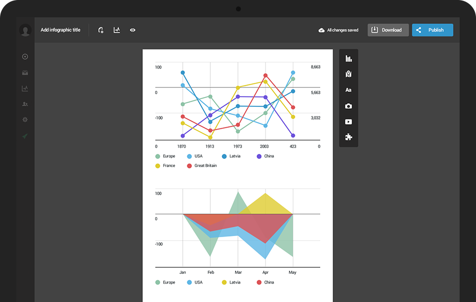

GLOBOCAN 2012 : Estimated Cancer Incidence, Mortality and Prevalence Worldwide in 2012
The aim of the project is to provide contemporary estimates of the incidence of, mortality and prevalence from major types of cancer, at national level, for 184 countries of the world. The GLOBOCAN estimates are presented for 2012, separately for each sex. 1-, 3- and 5-year prevalence data are available for the adult population only (ages 15 and over).
Please note that:
Non ergo erunt homines deliciis diffluentes audiendi, si quando de amicitia, quam nec usu nec ratione habent cognitam, disputabunt. Nam quis est, pro deorum fidem atque hominum! qui velit, ut neque diligat quemquam nec ipse ab ullo diligatur, circumfluere omnibus copiis atque in omnium rerum abundantia vivere? Haec enim est tyrannorum vita nimirum, in qua nulla fides, nulla caritas, nulla stabilis benevolentiae potest esse fiducia, omnia semper suspecta atque sollicita, nullus locus amicitiae.
Haec dum oriens diu perferret, caeli reserato tepore Constantius consulatu suo septies et Caesaris ter egressus Arelate Valentiam petit, in Gundomadum et Vadomarium fratres Alamannorum reges arma moturus, quorum crebris excursibus vastabantur confines limitibus terrae Gallorum.

Iis igitur est difficilius satis facere, qui se Latina scripta dicunt contemnere. in quibus hoc primum est in quo admirer, cur in gravissimis rebus non delectet eos sermo patrius, cum idem fabellas Latinas ad verbum e Graecis expressas non inviti legant. quis enim tam inimicus paene nomini Romano est, qui Ennii Medeam aut Antiopam Pacuvii spernat aut reiciat, quod se isdem Euripidis fabulis delectari dicat, Latinas litteras oderit?
Iis igitur est difficilius satis facere, qui se Latina scripta dicunt contemnere. in quibus hoc primum est in quo admirer, cur in gravissimis rebus non delectet eos sermo patrius, cum idem fabellas Latinas ad verbum e Graecis expressas non inviti legant. quis enim tam inimicus paene nomini Romano est, qui Ennii Medeam aut Antiopam Pacuvii spernat aut reiciat, quod se isdem Euripidis fabulis delectari dicat, Latinas litteras oderit?
Iis igitur est difficilius satis facere, qui se Latina scripta dicunt contemnere. in quibus hoc primum est in quo admirer, cur in gravissimis rebus non delectet eos sermo patrius, cum idem fabellas Latinas ad verbum e Graecis expressas non inviti legant. quis enim tam inimicus paene nomini Romano est, qui Ennii Medeam aut Antiopam Pacuvii spernat aut reiciat, quod se isdem Euripidis fabulis delectari dicat, Latinas litteras oderit?
Iis igitur est difficilius satis facere, qui se Latina scripta dicunt contemnere. in quibus hoc primum est in quo admirer, cur in gravissimis rebus non delectet eos sermo patrius, cum idem fabellas Latinas ad verbum e Graecis expressas non inviti legant. quis enim tam inimicus paene nomini Romano est, qui Ennii Medeam aut Antiopam Pacuvii spernat aut reiciat, quod se isdem Euripidis fabulis delectari dicat, Latinas litteras oderit?
Iis igitur est difficilius satis facere, qui se Latina scripta dicunt contemnere. in quibus hoc primum est in quo admirer, cur in gravissimis rebus non delectet eos sermo patrius, cum idem fabellas Latinas ad verbum e Graecis expressas non inviti legant. quis enim tam inimicus paene nomini Romano est, qui Ennii Medeam aut Antiopam Pacuvii spernat aut reiciat, quod se isdem Euripidis fabulis delectari dicat, Latinas litteras oderit?